Bunratty Castle in Co. Clare, Ireland, receives over 350,000 visitors annually. Its guided tour tells a single authorised narrative: one centred on aristocratic occupation, primarily the O'Brien clan and their restoration in the 1950s. Whereas, The Sheela na Gig carved into its stone a pre-Christian female figure of contested meaning goes unmentioned. The Viking settlement of 960 AD, the Norman rebuilding of 1275 and the Gaelic communities who lived and worked there across four centuries are effectively absent from the experience.
This thesis asked a single practical question: can a self directed, guide free VR station surface the histories Bunratty's official interpretation structurally omits and does it change how visitors engage with what they then see on the physical tour?
The gap between 8.5/10 interest and a −72 NPS is not a motivation problem. It is a delivery problem one this project set out to address through design.
The theoretical grounding for this project comes from Laurajane Smith's concept of the Authorised Heritage Discourse (AHD): the institutional tendency to frame heritage as monumental, aristocratic and expert owned, while erasing the everyday experiences of ordinary people who lived in and around those sites. Bunratty is a near perfect example of AHD in practice. A meticulously restored castle interpreted entirely through its ruling occupants, with its pre Norman, non elite and contested histories left invisible.
The Sheela na Gig is the sharpest example of this erasure. It is carved into Bunratty's stone and visible to anyone who looks. The official tour does not acknowledge it. Its meaning is contested early medieval, possibly connected to fertility or boundary marking, possibly carved as a ward but the contest itself is the story the AHD suppresses in favour of silence.

The primary user group is independent visitors at Bunratty those who arrive without a structured group tour, who move at their own pace and make their own interpretive choices. A secondary group emerged from the survey data: visitors with physical mobility limitations for whom the existing tour's pacing and physical demands are a barrier.
The station concept was designed to be encountered at the Main Guard level, before the physical tour begins so that what the VR surfaces reshapes how visitors engage with the castle they are about to walk through.
Can object based VR interaction reframe the Sheela na Gig from a decorative carving into evidence of a deliberate institutional erasure, without a guide present to prompt that reinterpretation?
Can a VR era filter mechanic restore the visible presence of the ordinary inhabitants — Viking, Norman, Gaelic which are erased from Bunratty's official narrative and do visitors retain specific historical knowledge from the encounter?
An 18 respondent survey established the baseline: high interest in history (8.5/10), very low satisfaction with how heritage sites currently deliver it (NPS −72). The pull factors that draw people into historical stories are atmosphere and environment (dominant), everyday life and ordinary people (strong) and the sense of discovering something hidden. These directly shaped both interactions.
Three primary personas emerged from the survey data and site observation. Aoife, 28 — a self directed independent visitor, emotionally motivated by atmosphere and discovery, frustrated by text heavy panels and passive listening formats. She represents the majority of independent visitors who arrive curious but leave unchanged. Tom, 55 — a heritage enthusiast with a deep interest in Irish history, who visits with family and wants depth without disrupting the group pace. Niamh, 34 — a local visitor with accessibility needs, for whom VR offers meaningful historical access that the physical tour cannot provide.
Three personas drove the design direction — spanning independent discovery, family depth-seeking, and accessibility-motivated access.
Five principles were established before ideation began, derived from survey findings and literature on embodied interaction at heritage sites:
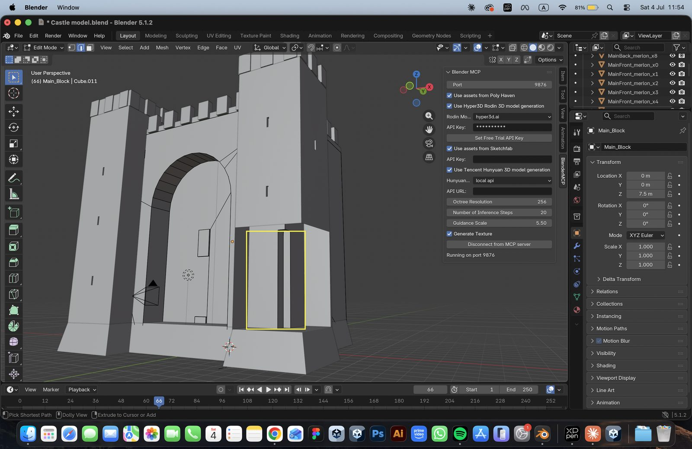
Castle architecture modelled in Blender 5.1 using Blender MCP for AI-assisted mesh refinement. Individual architectural components (merlon, arch, pillar sets) were modelled separately for era specific material overrides in Unity.
Ideation explored several approaches to surfacing the Sheela na Gig story and the era layering concept. The reassembly mechanic where the visitor physically grabs fragments of the Sheela and places them onto the correct positions emerged as the strongest response to Design Principle 1. It makes the act of recovery literally embodied. The era filter emerged from the challenge of holding four temporal states (Viking 960 AD, Norman 1275 AD, Gaelic Earl 1500s, Present Day 1960s) in comparison without slowing the experience to a crawl.
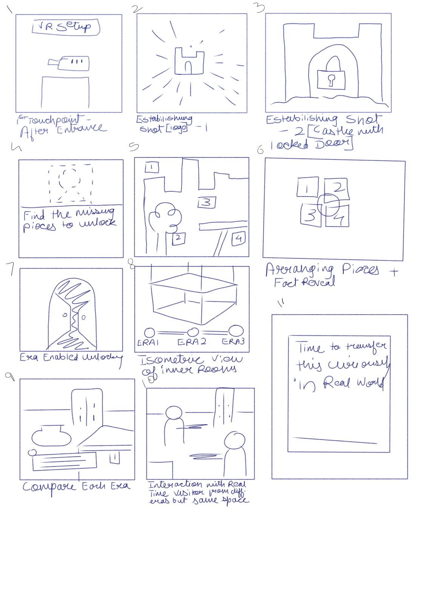
Mid-fidelity storyboard mapping both rooms' interaction sequences before high-fidelity prototyping began in Unity.
Room 1 is built around the Sheela na Gig: a female figure carved in stone at Bunratty, unacknowledged in the official tour. The visitor's task is to reassemble the figure — fragments are scattered across the room and must be grabbed and placed onto the correct positions on the sculpture. The act of reconstruction is the interpretive act: the visitor's hands do the recovering.
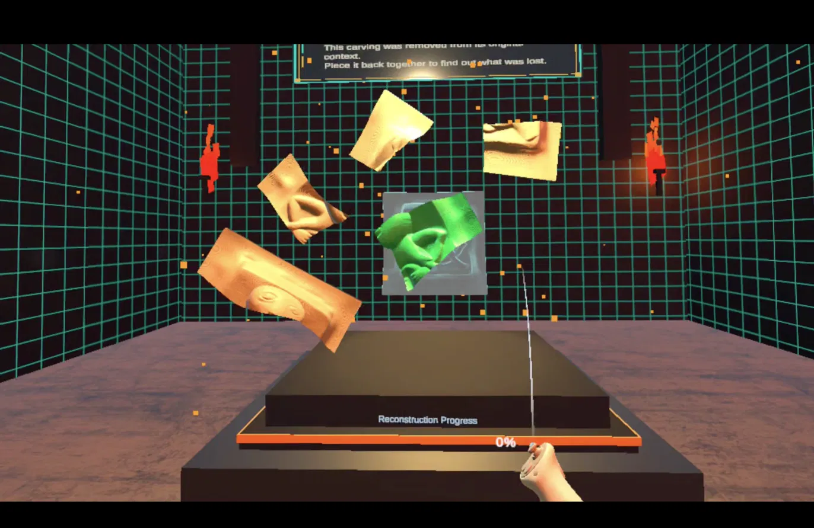
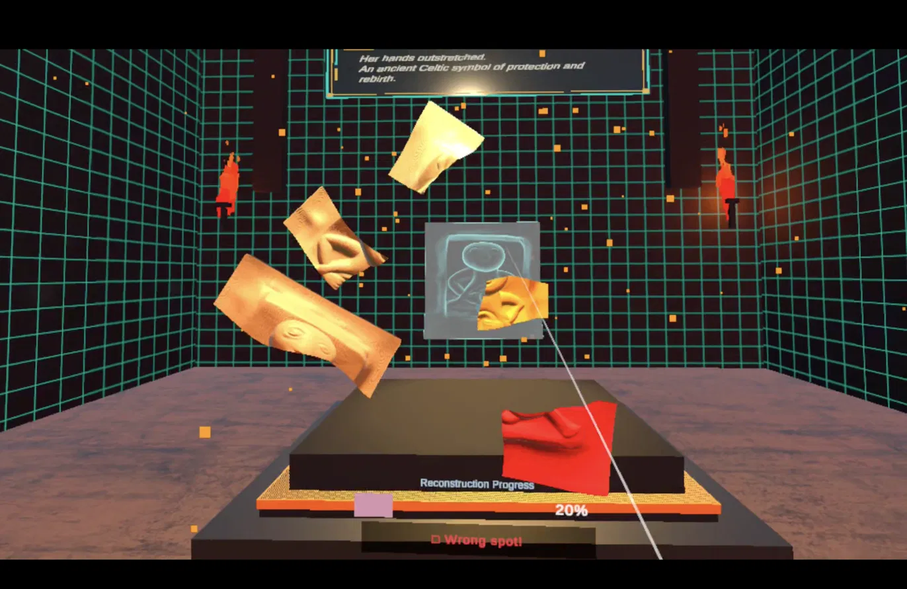
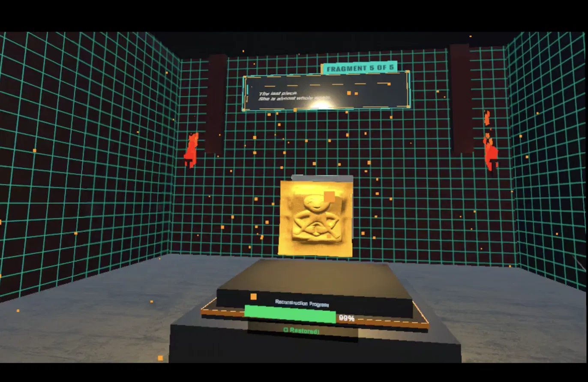
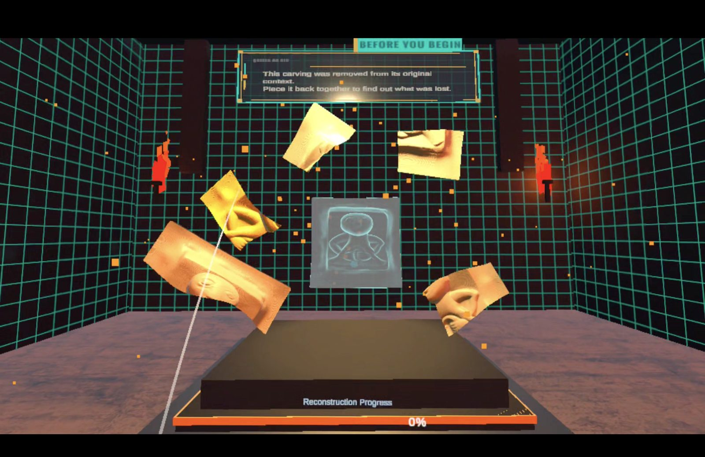
High-fidelity prototype of Room 1 in Unity 6. The Sheela na Gig chamber uses a grab-and-place mechanic built with XR Interaction Toolkit. Fragment assets were modelled in Blender.
Room 2 holds four eras of Bunratty simultaneously. The visitor stands in an isometric view of the castle and uses a controller HUD to switch between Viking 960 AD, Norman 1275 AD, Gaelic Earl 1500s and Present Day 1960s. Each era change rewrites materials, lighting, props and the castle's visible occupation. The stone itself stays constant; the world around it shifts.
The mechanic choice of a HUD press rather than a grab based rotation was deliberate. Room 1's research question is about recovery, so the visitor's hand does the reconstructing piece by piece. Room 2's question is about holding four eras in comparison, which requires instant and repeatable switching. A grab mechanic tested as too slow and unreliable for that cognitive task. In user testing, nobody found the mechanical difference between the two rooms inconsistent, because the mechanic matched what each room was asking of them.
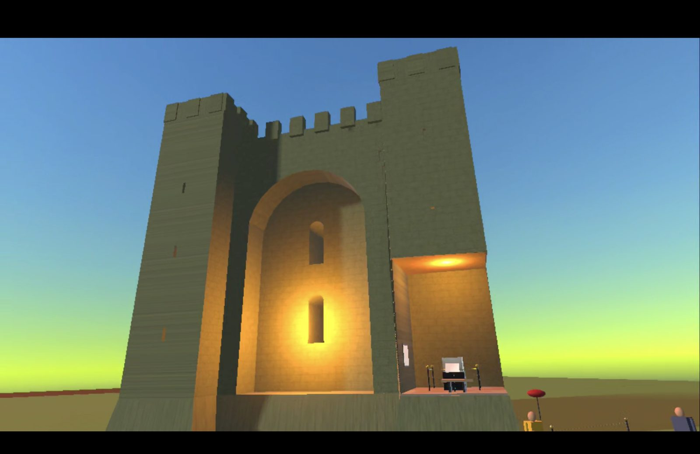
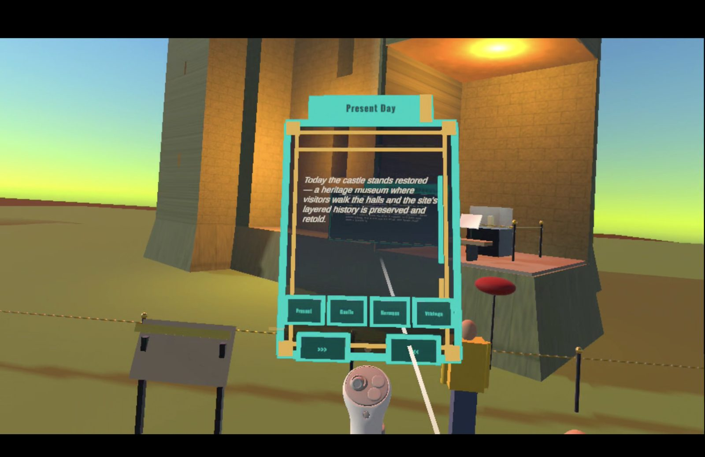
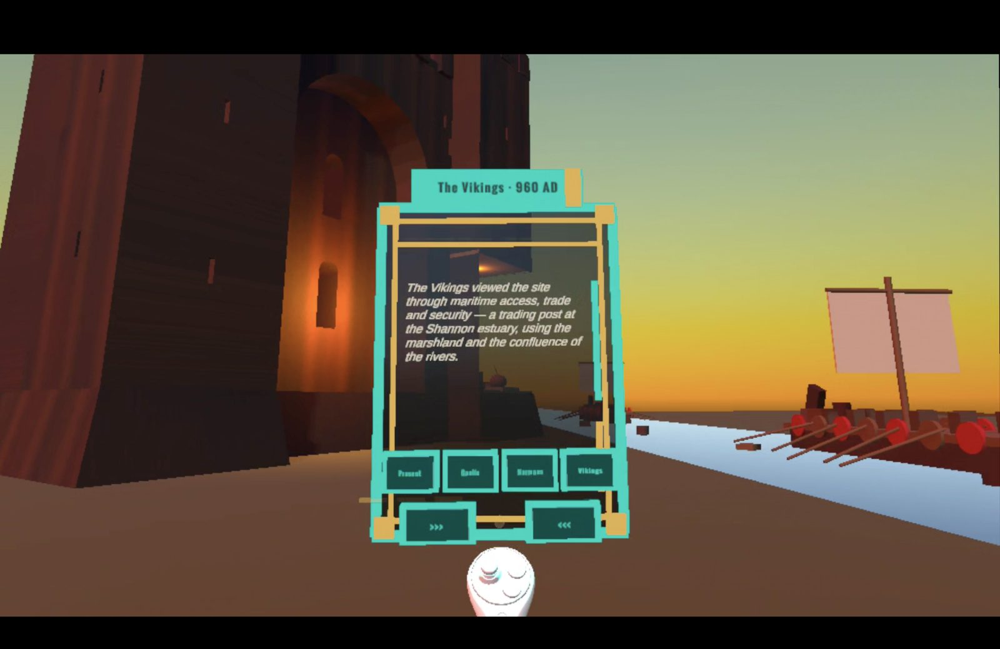
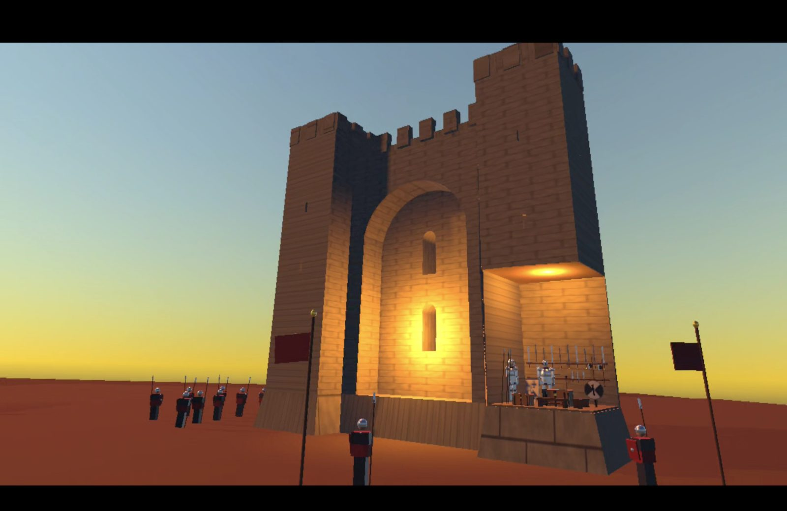
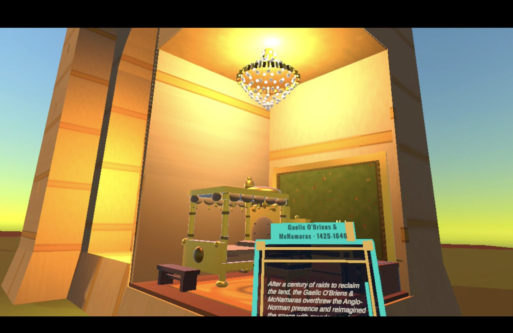
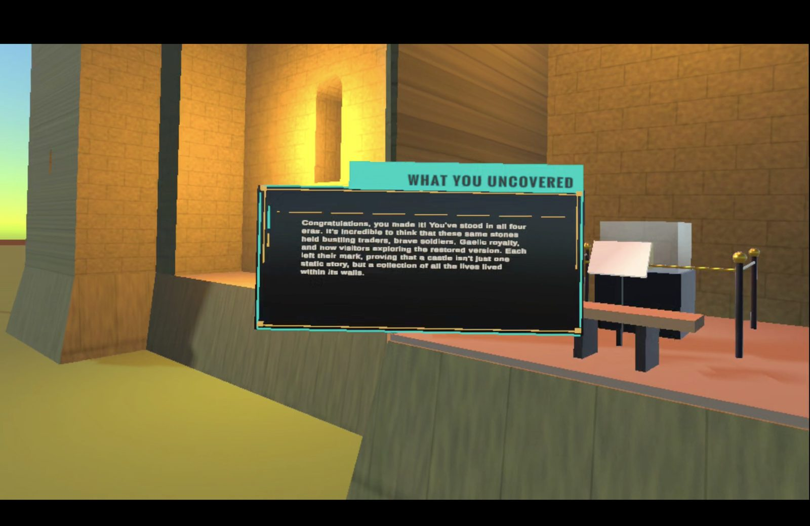
"What You Uncovered" — Room 2's closing summary panel (left). Wayfinding beacon system in Unity: pulsing cyan chevrons guide visitors from spawn point to castle entrance before instructions appear (right).
The visual system across both rooms was designed to be historically grounded. The design tests for photorealism were approached with calibrated expectations: one testing participant was explicit that "conceptual accuracy mattered more to him than graphics." Materials communicate era through texture and colour temperature rather than explicit labelling like rough timber and dim amber for Viking, cut stone and cooler light for Norman, woven textiles and firelight for Gaelic.
TextMesh Pro was used throughout for all in-world typography. Panel copy was kept deliberately short "felt more like captions than essays" was the description one participant offered.
The station concept places both VR rooms at Main Guard level before the physical tour begins. This sequencing is what the VR surfaces should reshape how visitors engage with the castle they are about to walk through. The station is designed to be self contained and runnable on a single Meta Quest 3 unit. A wayfinding sequence built into the VR environment itself a pulsing trail of glowing directional chevrons guides visitors from the spawn point to the castle entrance establishing purpose before procedure.
"Completing the VR station before the physical tour will change how you experienced the tour itself. If so, how?"
— User testing interview question, testing whether VR changes the physical visit that followsFive participants completed both VR rooms in facilitated sessions. The protocol measured three things: usability (can visitors complete each room without guidance?), historical engagement (can visitors name a specific historical fact unprompted after the session?) and environmental legibility (can visitors identify which era they are in from environmental cues alone, without reading the HUD label?).
The reassembly mechanic was the most consistently named highlight across all five participants. P1 called it "embodied research"; P4 described it as "the sense of personally restoring the Sheela." P2 valued the audio layer listening facts while acting let her "stay engaged without having to read everything."
All five participants confirmed that the VR experience surfaced histories absent from the physical tour. Every participant reinterpreted the Sheela na Gig from a decorative carving into evidence of a deliberate institutional decision (without being told to).
All five participants described their experience in terms closer to discovery than explanation. P3's response was the most direct: "strongly weighted toward discovery." P1 extended this into a claim about agency: "a participant in building the story compared to a passive listener."
Every participant preferred encountering both VR rooms before the physical tour. Four of five specified the Sheela na Gig chamber first. All five described the pacing as appropriate with no requests to shorten either room.
Four of five participants raised a version of the same gap: the opening was too abrupt and the closing lacked a clear finish moment. P5: "the lack of a clear 'you're done, here's what you learned' moment." Fixed in the next iteration as a single VR Equipment Usage Guide panel at station entry, with a closing summary in both rooms.
P2 and P5 both wanted panels positioned closer to the interaction itself at eye level near the fragments rather than requiring the visitor to look away from the action to find context. P1 and P3 also wanted the counter narrative intent made explicit rather than left unstated.
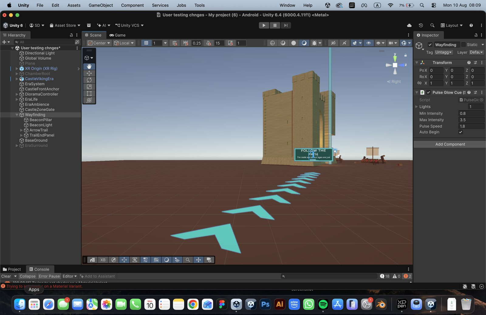
VR Equipment Usage Guide panel added post-testing — a single entry point covering both rooms' controls, establishing purpose before instruction.
The decision I had to defend most to myself and eventually to testing participants was keeping Room 1 and Room 2 mechanically different. Room 1's research question is about recovery, so the visitor's hand does the reconstructing. Room 2's question is about holding four eras in comparison, which a grab based rotation made slow and in early testing unreliable. A HUD press is instant and repeatable, which is what comparison actually needs.
In practice, testing validated the split: nobody struggled to understand why the two rooms behaved differently once they were inside them because the mechanic matched the cognitive task each room was asking of them. The lesson I'm taking forward is that consistency should be judged at the level of the interaction language like single input, immediate feedback, visitor pace not at the level of the specific gesture.
The clearest example of the process actually working as intended was the response to the narrative frame and wayfinding findings. Four of five participants independently raised a missing narrative frame and three raised a wayfinding gap. Rather than patching each room separately, I built a single wayfinding sequence and a single equipment guide that sits in front of both rooms reading the two findings together rather than as two separate tickets.
User testing with five participants provided consistent, convergent evidence that VR can style surface erased heritage histories at prototype scale, for the specific histories this project focused on. Both research questions received directional positive answers: object-based interaction did reframe the Sheela na Gig without a guide and the era filter did make the castle's layered occupation visible and retainable.
What the testing does not establish and the thesis is explicit about this is whether this holds at the scale and in the setting the project is designed for: an unstaffed station inside a live visitor flow at Bunratty itself. That gap between tested prototype and deployment reality is the honest boundary.